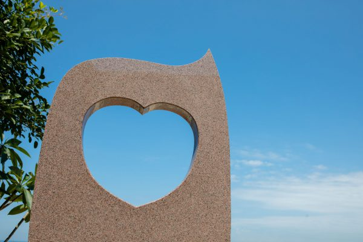

愛媛で最初の恋人の聖地

成20年4月に、愛媛県で初めて「恋人の聖地」（プロポーズにふさわしいロマンティックなスポット）の認定を受けたふたみシーサイド公園。 施設内には、恋人の聖地認定モニュメントの他にも、「願い石」と呼ばれる、恋人と二人で手を置き、夕日に願いをかけると幸せになれるといわれている石があります。
砂浜のほぼ中央、海に向かって突き出ている「恋人岬」には「夕日のモニュメント」があって、春分・秋分の日の前後数日間には、モニュメント中央の穴に夕日がすっぽり収まる様子を見ることができます。
成20年4月に、愛媛県で初めて「恋人の聖地」（プロポーズにふさわしいロマンティックなスポット）の認定を受けたふたみシーサイド公園。 施設内には、恋人の聖地認定モニュメントの他にも、「願い石」と呼ばれる、恋人と二人で手を置き、夕日に願いをかけると幸せになれるといわれている石があります。